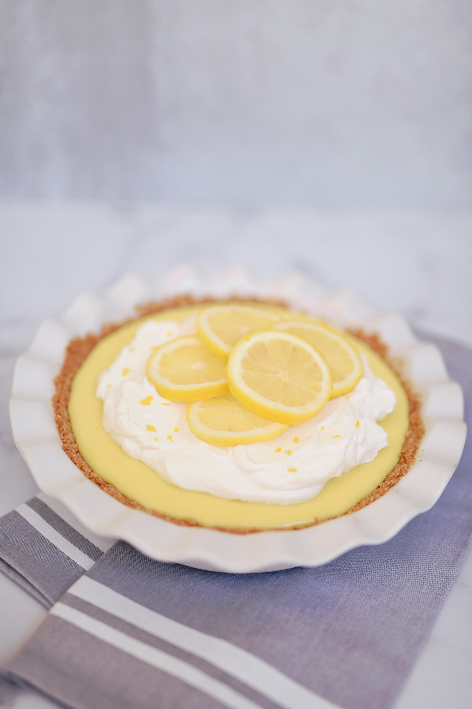

Southern Style Lemon Icebox Pie

A tried and true Southern classic, this delectable pie is no bake and perfect for serving on a hot summer day. Add Cool Whip or Whipped Cream on top for more goodness - but not meringue. As my momma's always said, that's just raw eggs!
Ingredients
- One can Eagle-brand Condensed Milk
- 3 Whole Lemons (or 1/2 cup lemon juice)
- 3 Egg Yolks
- One Graham Cracker Pie Pan (Or alternatively make your own)
Steps
- Roll lemons by hand until they are soft. Skip this step if you are not using fresh lemons.
- Juice the lemons using a lemon squeezer or by squeezing them by hand. Remove any seeds. Again, skip this step if you're not using fresh lemons!
- Separate egg whites from egg yolks.
- In a medium sized bowl, mix egg yolks and condensed milk. Gradually **VERY SLOWLY** add lemon juice. Adding the lemon juice too quickly can ruin the mixture.
- Chill overnight. It should be done within 6 hours.
- Add whipped cream or cool whip if so desired. Enjoy!